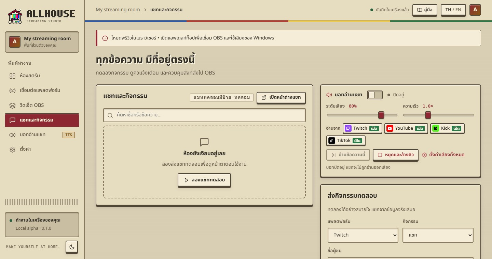
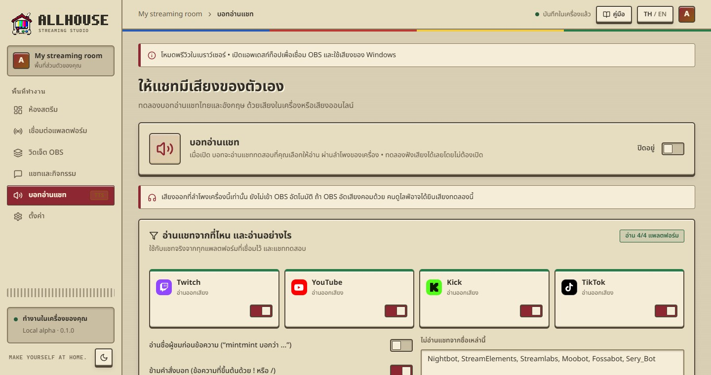
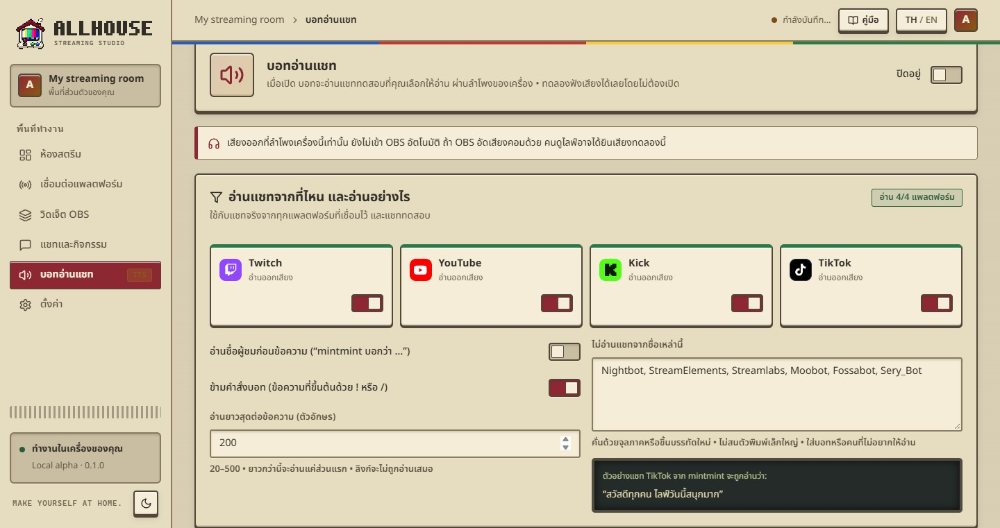

แชทจากทุกแพลตฟอร์มมารวมที่เดียว และให้บอทอ่านออกเสียงเฉพาะที่คุณต้องการ
Chat from every platform in one place, read aloud only where you want it.

ค้นหาSearchพิมพ์ชื่อหรือข้อความเพื่อกรองรายการType a name or words to filter the listเปิดหน้าต่างแชทPop out chatหน้าต่างแนวตั้งสำหรับอ่านแชทอย่างเดียว ปักไว้บนสุดได้ ปรับขนาดตัวอักษรด้วย A- / A+A tall reading-only chat window you can pin on top; A- / A+ change the text sizeส่งกิจกรรมทดสอบSend a test eventเลือกแพลตฟอร์ม ชนิด (แชท ติดตาม สมาชิก ของขวัญ) ชื่อและข้อความ เลือกว่าจะแสดงแค่ในแอพหรือส่งไป OBS ด้วยPick a platform, type (chat, follow, subscription, gift), name and text, and whether it stays in the app or goes to OBS tooคิวการแจ้งเตือนAlert queueพักคิว / ข้าม / ล้างคิว ใช้ตอนมีการแจ้งเตือนรัวๆ หรืออยากหยุดชั่วคราวPause / skip / clear, for alert floods or a quick break
เสียงของ WindowsWindows voicesฟรี ไม่ต้องใช้อินเทอร์เน็ต ข้อความไม่ออกจากเครื่อง ใช้ได้เฉพาะเสียงที่ติดตั้งใน WindowsFree and offline; text never leaves your computer. Uses the voices installed in Windows.เสียงออนไลน์Online voicesเสียงไทยธรรมชาติ (Premwadee / Niwat) ฟรี ต้องใช้อินเทอร์เน็ต ข้อความแชทจะถูกส่งไปบริการของ Microsoft ต้องกดยอมรับก่อนใช้Natural Thai voices (Premwadee / Niwat), free, need internet. Chat text is sent to Microsoft’s service; you agree to that before using it.ไทย + อังกฤษThai + Englishแอพแยกส่วนภาษาไทยกับอังกฤษในข้อความเองอัตโนมัติ และใช้เสียงที่ตรงภาษา หรือเปิด “ใช้เสียงเดียวอ่านทั้งข้อความ” ให้เสียงเดียวอ่านทั้งหมดThe app splits Thai and English parts of a message and uses a matching voice for each. Or turn on “One voice reads the whole message” and that voice reads everything in its own accent.ความเร็ว / ความดังSpeed / volumeปรับได้ทั้งในหน้านี้และบนแถบควบคุมในหน้าแชทSet them here or on the speech bar on the chat pageหยุดและล้างคิวStop & clearหยุดเสียงที่กำลังอ่านและทิ้งข้อความที่รออยู่ทั้งหมดทันทีStops the current message and drops everything waiting, at onceเสียงบอทออกที่ลำโพงเครื่องนี้ ถ้า OBS จับ Desktop Audio อยู่ ผู้ชมจะได้ยินเสียงบอทด้วย (รวมถึงตอนทดลองฟัง)
Speech plays through this computer’s speakers. If OBS captures Desktop Audio, viewers hear it too, including when you try voices.

เปิด/ปิดแต่ละแพลตฟอร์มPer platformแพลตฟอร์มที่ปิดเสียง แชทยังแสดงในแอพและบน OBS ตามปกติ แค่บอทไม่อ่าน (สลับเร็วได้จากปุ่ม “อ่านจาก” บนแถบควบคุมเสียง)Muted platforms still show chat in the app and OBS; they just aren’t read (switch quickly from “Read from” on the speech bar)อ่านชื่อผู้ชมก่อนSay the name firstเช่น “mintmint บอกว่า …” • ตั้งรูปแบบเองได้ด้วย {user} {message} {platform} เช่น “คุณ {user} ฝากมาว่า {message}” (เว้นว่าง = อัตโนมัติ)e.g. “mintmint says …” • write your own pattern with {user} {message} {platform}, e.g. “{user} on {platform}: {message}” (empty = automatic)ข้ามคำสั่งบอทSkip bot commandsไม่อ่านข้อความที่ขึ้นต้นด้วย ! หรือ / เช่น !pointsMessages starting with ! or / (like !points) aren’t readไม่อ่านชื่อเหล่านี้Never read these namesใส่ชื่อบอทหรือคนที่ไม่อยากให้อ่าน คั่นด้วยจุลภาคหรือขึ้นบรรทัดใหม่Bots or people to skip, separated by commas or new linesอ่านยาวสุดLongest message20–500 ตัวอักษรต่อข้อความ ยาวกว่านี้อ่านแค่ส่วนแรก ลิงก์ไม่ถูกอ่านเสมอ20–500 characters; longer messages are cut. Links are never read.กฎชุดนี้ใช้กับแชททดสอบด้วย ลองตั้งค่าแล้วส่งแชททดสอบ (เปิด “ให้อ่านแชททดสอบด้วย”) ก่อนไลฟ์ได้
These rules apply to test chats too. Set them up and send a test chat (with “Read test chats aloud” on) before you go live.
Allhouse 0.1.0 · Local alpha · คู่มือนี้มากับแอพ เปิดได้แม้ไม่มีอินเทอร์เน็ตAllhouse 0.1.0 · Local alpha · This manual ships with the app and works offline
 MANUAL
MANUAL